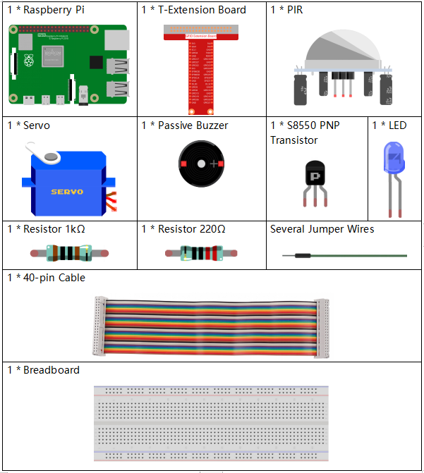

Nota
¡Hola! Bienvenido a la comunidad de entusiastas de SunFounder para Raspberry Pi, Arduino y ESP32 en Facebook. Únete a otros apasionados y profundiza en el uso de Raspberry Pi, Arduino y ESP32.
¿Por qué unirte?
Soporte de expertos: Resuelve problemas postventa y desafíos técnicos con la ayuda de nuestra comunidad y equipo.
Aprende y comparte: Intercambia consejos y tutoriales para mejorar tus habilidades.
Avances exclusivos: Obtén acceso anticipado a anuncios de nuevos productos y adelantos exclusivos.
Descuentos especiales: Disfruta de descuentos exclusivos en nuestros productos más recientes.
Promociones festivas y sorteos: Participa en sorteos y promociones de temporada.
üëâ ¬øListo para explorar y crear con nosotros? Haz clic en [Aqu√≠] y únete hoy mismo.
3.1.2 Bienvenido
Introducción
En este proyecto, usaremos un sensor PIR para detectar el movimiento de los peatones y utilizaremos servos, LED y un timbre para simular el funcionamiento de la puerta automática en una tienda de conveniencia. Cuando un peatón aparezca dentro del rango de detección del PIR, se encenderá la luz indicadora, la puerta se abrirá y el timbre reproducirá una melodía de bienvenida.
Componentes necesarios
En este proyecto, necesitamos los siguientes componentes.
{kind=link}
Diagrama esquemático
T-Board Name |
physical |
wiringPi |
BCM |
GPIO18 |
Pin 12 |
1 |
18 |
GPIO17 |
Pin 11 |
0 |
17 |
GPIO27 |
Pin 13 |
2 |
27 |
GPIO22 |
Pin 15 |
3 |
22 |

Procedimientos experimentales
Paso 1: Construye el circuito.

Paso 2: Cambia al directorio del código.
cd ~/davinci-kit-for-raspberry-pi/python-pi5
Paso 3: Ejecuta el programa.
sudo python3 3.1.2_Welcome.py
Después de ejecutar el código, si el sensor PIR detecta que alguien pasa, la puerta se abrirá automáticamente (simulada por el servo), se encenderá la luz indicadora y sonará la música de bienvenida. Después de que termine la música, el sistema cerrará automáticamente la puerta y apagará la luz, esperando a la próxima persona que pase.
El módulo PIR tiene dos potenciómetros: uno para ajustar la sensibilidad y otro para ajustar la distancia de detección. Para mejorar el funcionamiento del módulo PIR, gíralos ambos en sentido contrario a las agujas del reloj hasta el final.
{kind=link}
Advertencia
Si aparece el mensaje de error RuntimeError: Cannot determine SOC peripheral base address, consulta Si gpiozero no funciona.
Código
Nota
Puedes Modificar/Restablecer/Copiar/Ejecutar/Detener el código a continuación. Pero antes, debes ir a la ruta del código fuente como raphael-kit/python-pi5. Después de modificar el código, puedes ejecutarlo directamente para ver el efecto.
#!/usr/bin/env python3
from gpiozero import LED, MotionSensor, Servo, TonalBuzzer
import time
# Configuración de pines GPIO para el LED, sensor de movimiento (PIR) y buzzer
ledPin = LED(6)
pirPin = MotionSensor(21)
buzPin = TonalBuzzer(27)
# Factor de corrección de ancho de pulso del servo y cálculo
myCorrection = 0.45
maxPW = (2.0 + myCorrection) / 1000 # Ancho de pulso máximo
minPW = (1.0 - myCorrection) / 1000 # Ancho de pulso mínimo
# Inicializar el servo con anchos de pulso personalizados
servoPin = Servo(25, min_pulse_width=minPW, max_pulse_width=maxPW)
# Melodía para el buzzer, con notas y duraciones
tune = [('C#4', 0.2), ('D4', 0.2), (None, 0.2),
('Eb4', 0.2), ('E4', 0.2), (None, 0.6),
('F#4', 0.2), ('G4', 0.2), (None, 0.6),
('Eb4', 0.2), ('E4', 0.2), (None, 0.2),
('F#4', 0.2), ('G4', 0.2), (None, 0.2),
('C4', 0.2), ('B4', 0.2), (None, 0.2),
('F#4', 0.2), ('G4', 0.2), (None, 0.2),
('B4', 0.2), ('Bb4', 0.5), (None, 0.6),
('A4', 0.2), ('G4', 0.2), ('E4', 0.2),
('D4', 0.2), ('E4', 0.2)]
def setAngle(angle):
"""
Move the servo to a specified angle.
:param angle: Angle in degrees (0-180).
"""
value = float(angle / 180) # Convierte el ángulo a valor de servo
servoPin.value = value # Ajusta la posición del servo
time.sleep(0.001) # Breve pausa para el movimiento del servo
def doorbell():
"""
Play a musical tune using the buzzer.
"""
for note, duration in tune:
buzPin.play(note) # Reproduce la nota
time.sleep(float(duration)) # Duración de la nota
buzPin.stop() # Detiene el buzzer después de la melodía
def closedoor():
# Apaga el LED y mueve el servo para cerrar la puerta
ledPin.off()
for i in range(180, -1, -1):
setAngle(i) # Mueve el servo de 180 a 0 grados
time.sleep(0.001) # Breve pausa para un movimiento suave
time.sleep(1) # Espera después de cerrar la puerta
def opendoor():
# Enciende el LED, abre la puerta (mueve el servo), reproduce la melodía y luego cierra la puerta
ledPin.on()
for i in range(0, 181):
setAngle(i) # Mueve el servo de 0 a 180 grados
time.sleep(0.001) # Breve pausa para un movimiento suave
time.sleep(1) # Espera antes de reproducir la melodía
doorbell() # Reproduce la melodía de bienvenida
closedoor() # Cierra la puerta después de la melodía
def loop():
# Bucle principal para verificar movimiento y operar la puerta
while True:
if pirPin.motion_detected:
opendoor() # Abre la puerta si se detecta movimiento
time.sleep(0.1) # Breve pausa en el bucle
try:
loop()
except KeyboardInterrupt:
# Limpia los GPIO en caso de interrupción del usuario (e.g., Ctrl+C)
buzPin.stop()
ledPin.off()
Explicación del Código
El script comienza importando los módulos necesarios. La biblioteca
gpiozerose usa para interactuar con el LED, el sensor de movimiento, el servo y el zumbador tonal. El módulotimepermite manejar funciones relacionadas con el tiempo.#!/usr/bin/env python3 from gpiozero import LED, MotionSensor, Servo, TonalBuzzer import time
Inicializa el LED, el sensor de movimiento PIR y el zumbador tonal en sus respectivos pines GPIO.
# Configuración de pines GPIO para LED, sensor de movimiento (PIR) y zumbador ledPin = LED(6) pirPin = MotionSensor(21) buzPin = TonalBuzzer(27)
Calcula los anchos de pulso máximo y mínimo para el servo, incorporando un factor de corrección para ajustes precisos.
# Factor de corrección y cálculo de ancho de pulso para el servo myCorrection = 0.45 maxPW = (2.0 + myCorrection) / 1000 # Ancho de pulso máximo minPW = (1.0 - myCorrection) / 1000 # Ancho de pulso mínimo
Inicializa el motor del servo en el pin GPIO 25 con los anchos de pulso personalizados para una posición precisa.
# Inicializar el servo con anchos de pulso personalizados servoPin = Servo(25, min_pulse_width=minPW, max_pulse_width=maxPW)
La melodía se define como una secuencia de notas (frecuencia) y duraciones (segundos).
# Melodía para el zumbador, con notas y duraciones tune = [('C#4', 0.2), ('D4', 0.2), (None, 0.2), ('Eb4', 0.2), ('E4', 0.2), (None, 0.6), ('F#4', 0.2), ('G4', 0.2), (None, 0.6), ('Eb4', 0.2), ('E4', 0.2), (None, 0.2), ('F#4', 0.2), ('G4', 0.2), (None, 0.2), ('C4', 0.2), ('B4', 0.2), (None, 0.2), ('F#4', 0.2), ('G4', 0.2), (None, 0.2), ('B4', 0.2), ('Bb4', 0.5), (None, 0.6), ('A4', 0.2), ('G4', 0.2), ('E4', 0.2), ('D4', 0.2), ('E4', 0.2)]
Función para mover el servo a un ángulo específico. Convierte el ángulo a un valor entre 0 y 1 para el servo.
def setAngle(angle): """ Move the servo to a specified angle. :param angle: Angle in degrees (0-180). """ value = float(angle / 180) # Convierte el ángulo a valor de servo servoPin.value = value # Establece la posición del servo time.sleep(0.001) # Breve pausa para el movimiento del servo
Función para reproducir una melodía utilizando el zumbador. Itera a través de la lista
tune, reproduciendo cada nota durante su duración especificada.def doorbell(): """ Play a musical tune using the buzzer. """ for note, duration in tune: buzPin.play(note) # Reproduce la nota time.sleep(float(duration)) # Duración de la nota buzPin.stop() # Detiene el zumbador después de la melodía
Funciones para abrir y cerrar la puerta utilizando el motor del servo. La función
opendoorenciende el LED, abre la puerta, reproduce la melodía y luego cierra la puerta.def closedoor(): # Apaga el LED y mueve el servo para cerrar la puerta ledPin.off() for i in range(180, -1, -1): setAngle(i) # Mueve el servo de 180 a 0 grados time.sleep(0.001) # Breve pausa para un movimiento suave time.sleep(1) # Espera después de cerrar la puerta def opendoor(): # Enciende el LED, abre la puerta (mueve el servo), reproduce la melodía y cierra la puerta ledPin.on() for i in range(0, 181): setAngle(i) # Mueve el servo de 0 a 180 grados time.sleep(0.001) # Breve pausa para un movimiento suave time.sleep(1) # Espera antes de reproducir la melodía doorbell() # Reproduce la melodía de bienvenida closedoor() # Cierra la puerta después de la melodía
Bucle principal que verifica constantemente la detección de movimiento. Cuando se detecta movimiento, activa la función
opendoor.def loop(): # Bucle principal para verificar movimiento y operar la puerta while True: if pirPin.motion_detected: opendoor() # Abre la puerta si se detecta movimiento time.sleep(0.1) # Breve pausa en el bucle
Ejecuta el bucle principal y asegura que el script pueda detenerse con un comando de teclado (Ctrl+C), apagando el zumbador y el LED para una salida limpia.
try: loop() except KeyboardInterrupt: # Limpia los GPIO en caso de interrupción del usuario (e.g., Ctrl+C) buzPin.stop() ledPin.off()